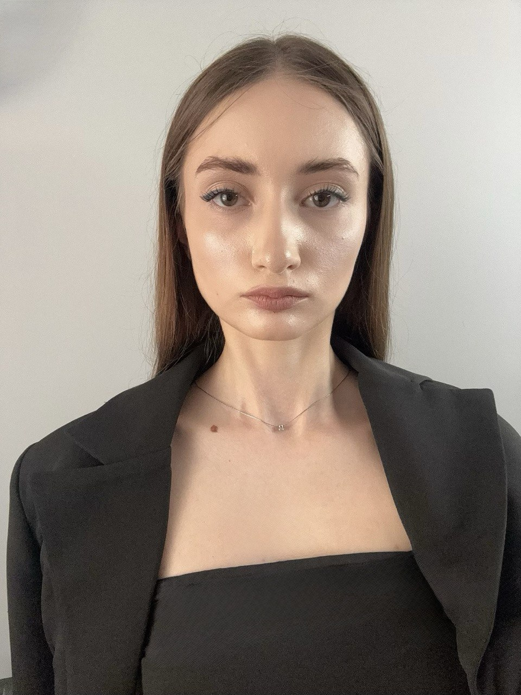

Dmitriev Irina

Date Personale
- Vârstă: 18 ani
- Origine: Satul Pîrîta, Raionul Dubăsari, Republica Moldova
- Instituție: CEEF (Anul II)
- Grupa: DW-2412
- Statut: Stagiar
Prezentare Generală
Elevă în anul II la Centrul de Excelență în Economie și Finanțe (CEEF)
Specialitate: Dezvoltator Web
Prezentul portofoliu digital reflectă activitatea, competențele și realizările acumulate pe parcursul Stagiului de Practică de Instruire.
Competențe și Cunoștințe Acumulate
Semestrul I: Fundamente în Programare și Proiectare
- Programarea Calculatorului (C++): Tehnici avansate de programare (metode de triere, reluare, programare dinamică, tehnica backtracking etc.) și implementarea algoritmilor.
- Planificarea Aplicațiilor Web: Structurarea unei aplicații web și utilizarea platformei Figma pentru wireframing și planificare inițială.
- Grafică 3D: Experiență practică în modelare tehnică și spațială utilizând FreeCAD.
- Conceperea Produselor Multimedia: Soluții vizuale interactive și prezentări media în Canva și Genially.
Semestrul II: Dezvoltare Web, OOP și Sisteme de Operare
- Crearea Site-urilor Web: Studierea detaliată a limbajelor HTML și CSS pentru pagini web structurate corect, semantice și stilizate estetic.
- Design UX/UI: Proiectarea interfețelor în Figma bazată pe principii de uzabilitate, design centrat pe utilizator și prototipare.
- Programarea Orientată pe Obiecte (POO): Conceptele fundamentale ale paradigmei orientate pe obiecte cu aplicații practice în limbajul C#.
- Utilizarea Sistemelor de Operare: Abilități practice de administrare în terminal, stăpânind comenzile de bază Linux pentru lucrul în mașini virtuale (Ubuntu online).
Obiectivul și Structura Stagiului de Practică
Principala sarcină constă în elaborarea acestui portofoliu digital (CV-ul stagiarului), proiect ce îmbină competențele de design UX/UI, HTML și CSS cu probleme de programare, integrând:
- Integrarea și Rezolvarea a 11 Probleme Algoritmice: 8 în C++ (tehnici din Semestrul I), 2 în C# (POO din Semestrul II) și 1 problemă complexă (Studiu de caz individual cu module structurate).
- Studiu de Caz și Analiză Individuală: Elaborarea unei analize teoretice și practice asupra unui subiect ales din cadrul tehnicilor de programare.
- Monitorizarea Activității și Evaluarea: Documentarea riguroasă a experiențelor în agenda de practică și planificarea zilnică a obiectivelor.
Scopul final este dezvoltarea unei soluții web complete care demonstrează abilități avansate de optimizare, structurare corectă a codului și gestionare a datelor.
Concluzii și Competențe Dobândite
Stagiul de practică a reprezentat o etapă esențială în consolidarea cunoștințelor teoretice, oferindu-mi oportunitatea de a lucra direct cu provocări reale de programare și design software.
1. Gândire Algoritmică
Am aprofundat tehnici avansate precum Backtracking, Greedy, Divide et Impera și Programare Dinamică, esențiale pentru optimizarea complexității temporale și spațiale în rezolvarea problemelor.
2. Programare Orientată pe Obiecte
Am pus în practică principiile fundamentale POO (încapsulare, moștenire, polimorfism) în limbajele C# și C++, reușind să structurez sisteme complexe de gestiune (hoteluri, parcuri auto).
3. Dezvoltare și Arhitectură
Mi-am îmbunătățit capacitatea de a gestiona memorie alocată dinamic, de a lucra cu structuri de date personalizate (liste înlănțuite) și de a documenta riguros codul sursă.
În concluzie, această perioadă de practică mi-a demonstrat că succesul în ingineria software depinde de echilibrul dintre rigoarea matematică a algoritmilor și calitatea designului orientat pe obiecte.